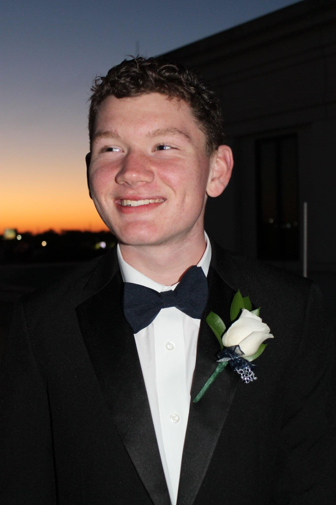

Nathan McKissick
About to author

I grew up in Gulfport, Mississippi in a family of 5. Growing up, I was never the athletic type of kid. I was, by all means, a nerd. I was the kid who played the violin and took the ACT in the 8th grade to make a 24/36. All this to say I was in no way someone involved in cycling.
This all changed towards the end of middle school. I entered physical therapy in the beggining of middle school and when I was leaving physical therapy at the end of middle school they suggested taking up recreational cycling. This recreational cycling led to my current love for the sport and even led me to pursue the sport on the college level. I have recieved support from a countless number of people throughout my journey and wouldn't have made it without them. <
In the same way people have been there to help me along my way, I hope those reading this webpage can use the information found here to better their understanding of collegiate cycling.